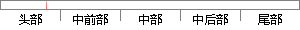

层叠样式表(Cascading Style Sheets)，是用来表示标记语言的一种计算机语言。
片段位置图

相似结果|
相似片段 1：内容的展示出来。CSS（Cascading Style Sheets）是层叠样式表，同样不是编程语言，是用来表示 HTML 展示的内容的样式的。JavaScript是一种轻量级的编程语言，是可插入
相似片段 2：142.6.3 CSS层叠样式表的应用CSS是 Cascading Style Sheets(层叠样式表单)的简称，更多的人把它称作级联样式表。顾名思义，它是一种用来设计网页表现形式的计算机语言
相似片段 3：，IE。层叠样式表单（Cascading Style Sheets，以下简称 CSS）是一种可以用来表现16HTML文件式样的计算机语言。在网页制作时采用 CSS样式单，可以有效地对页面的布局、字体、颜色、背景和其它效果实现更加精确的控制。
相似片段 4： ActionScript来实现行为逻辑[28]。2.3.2.4 CSSCSS（Cascading Style Sheets，层叠样式表）是一种用来为结构化文档（如 Html文档或 XML应用）添加样式的计算机语言[29
相似片段 5：">5.6其他技术5.6.1 CSS+DIV布局CSS（Cascading Style Sheets，层叠样式表单），是用来表现 HTML 或 XML等文件式样的计算机语言之一[47]。简单地说，CSS
相似片段 6： Sheet Language，扩展样式表语言)是一种来描述这些文档如何显示的机制，它是XML的样式表描述语言。XSL的历史比HTML用的CSS (Cascading Style Sheets，层叠式样式表
|
※ 片段修改建议 ※
近似词参考：- 表示：暗示 默示 示意 透露表现 表现
- 标记：标识表记标帜 标志 符号
- 语言：说话
系统自动生成语句：层叠样式表(Cascading Style Sheets)，是用来暗示标识表记标帜说话的一种计算机说话。
注：本片段修改建议为系统自动生成，仅供参考。